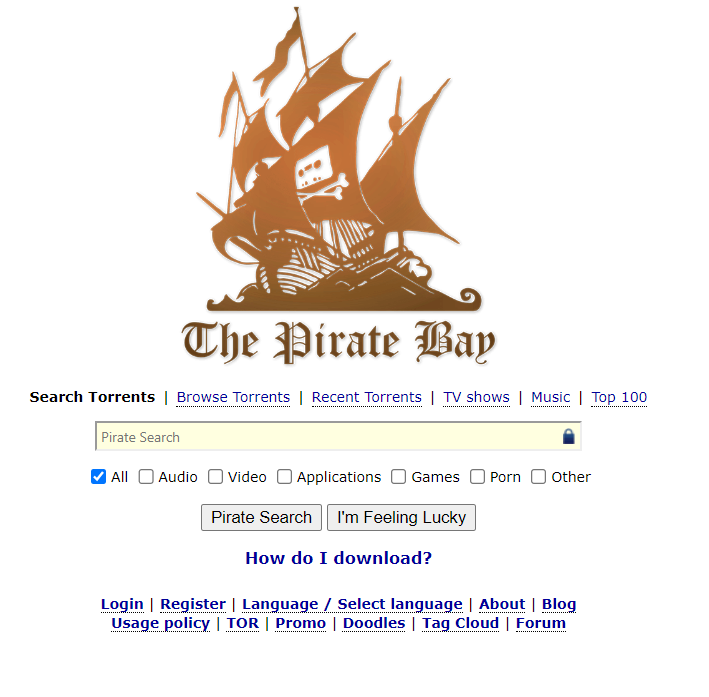
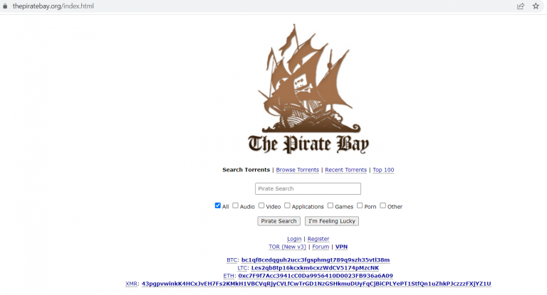
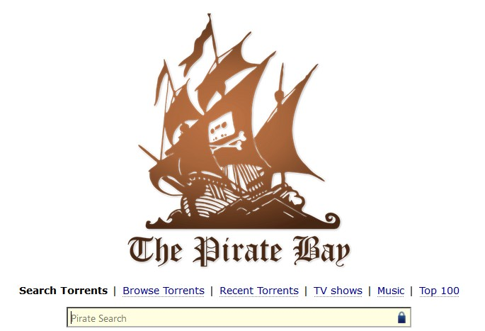
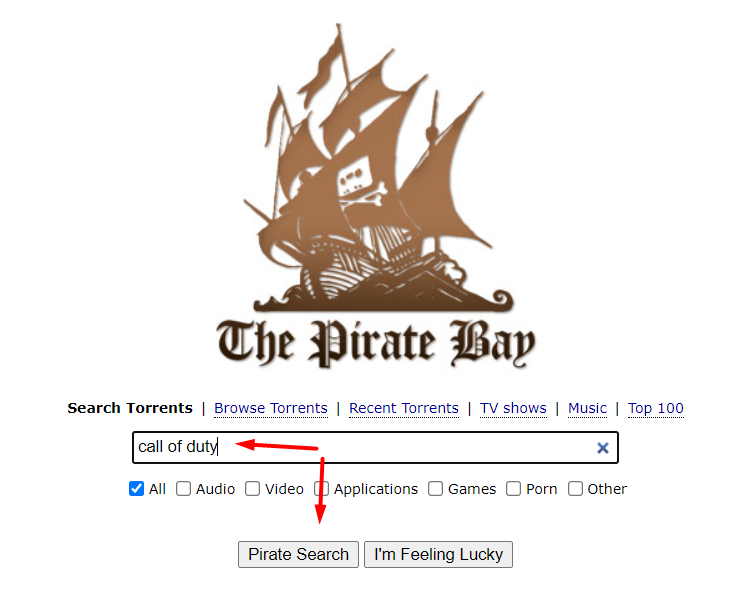
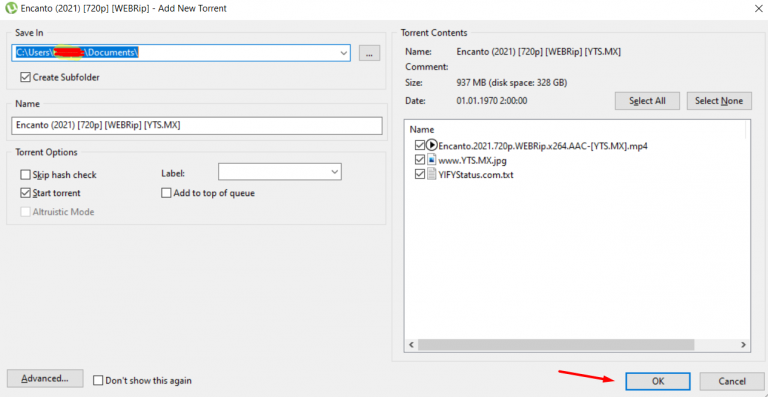
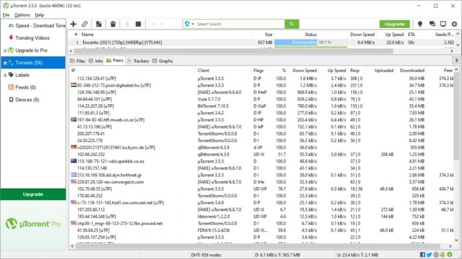
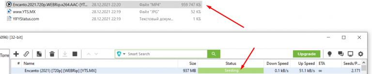
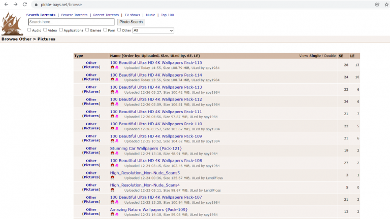

What is The Pirate Bay?
Considered one of the Internet’s household sites, The Pirate Bay is an online database of software and entertainment-related digital files. Visitors to The Pirate Bay may browse, download, and share torrent files and magnet links, which promote peer-to-peer (P2P) file sharing among BitTorrent protocol users. Users have the option to look for Magnet links on The Pirate Bay. These point to peer-to-peer network download URLs that start downloading the required content when accessed in a BitTorrent client.
Are There Alternatives to Pirate Bay?
Along with the main website, proxy sites are also heavily targeted by ISPs and authorities for restriction, which resulted in numerous proxies shutting down throughout the years. Just as one mirror site gets taken down, another one emerges. The short lifespan of many of these mirror sites led to a never-ending cat-and-mouse game with authorities.
With the plethora of mirror sites available, not every proxy is reliable. Therefore, many people chose to move on and sought after Pirate Bay alternatives instead. Here are the other options that perform similarly to Pirate Bay:
Kickass Torrents
Kickass gained popularity in 2014 when it became the staple providing a comprehensive directory for torrent files. It even came to a point when Kickass overtook Pirate Bay facilitating reliable peer-to-peer file sharing using BitTorrent protocols. Unfortunately, its domains were seized by the US government in 2016. The people behind Kickass quickly recovered and re-organized proxies soon after its seizure.
1337x
1337x achieved its fame soon after the decline of Kickass Torrents in 2016. This option stands out, for it remained one step ahead of copyright authorities through a progressive set of mirror sites produced. The people behind 1337x used this multiple-domain procedure to dodge seizures in the face of its potential demise.
Zooqle
Presently, Zooqle is one of the most popular alternatives to Pirate Bay, with a whopping 4 million downloads in its directory. Zooqle is developed in Russia, which helped prevent further seizures from many copyright authorities. They even offer RSS channels and membership options to help users identify the files they want.
Torlock
Torlock takes pride in providing over 5 million files to download for its users. It would be ideal for those looking for an option to find a vast collection of verified files. Similar to the others, Torlock allows users to navigate the website easily using fundamental queries.
YIFY
YIFY is known for providing the highest quality video while maintaining small file sizes. Also referred to as YTS, it generated significant traffic around 2011, which directly competed against Kickass Torrents. YIFY changed its name to YTS in 2014 when founder Yiftach Swery stepped down from the organization.
A year after that, YTS received copyright lawsuits, which forced them to shut down permanently. This shutdown resulted in multiple clone websites that used the YIFY name unofficially.
Ibi Kopimi Botani’s Association with Pirate Bay and his Death
The real reason the Pirate Bay founder disbanded is because one of their own, or rather, someone who helped with the Pirate Bay mission died. Ibi Kopimi Botani died in 2010. Though the Pirate Bay Network stayed afloat, they disbanded their Swdish Think Tank group, Piratbyran. The group didn’t just pirate material for the Pirate Bay. They campaigned to put an end to anti-file sharing rules, regulations, and laws. People mourned the loss of Botani, and they also mourned the loss of Piratbyran the the Pirate Bay Network. Though the site didn’t stay down, this is the time when the founders gave up their work and let someone new take the reins. It’s also likely around the time when people started to stop pirating things in general. Piracy still exists, and has sort of made a comeback, but it’s not what it once was. It is said the piracy can be halted by offering cheap, free content. That’s what sites like Netflix and Spotify have done, which is likely why piracy hasn’t been very popular in the last few years. With Botani’s death and the downturn in piracy, many members of the Piratbyran moved on, too. They instead decided to dedicate their services to Telecomix, a website or decentralized cluster that is made up of activities who want vie for the freedom of expression. They’ve worked to make it so people can express themselves online however they want to. They’ve intervened in Syrian networks, Egyptian networks, and more.
The Pirate Bay Torrent Network and Alternatives
Every torrent downloader is on the constant lookout for trustworthy and consistent sites. But, with the brutal government regulations and constant attacks on torrenting websites, finding a consistent source for torrenting is far more difficult than a simple Google search. Still, high-quality torrenting sites are out there if you know where to look.
The Pirate Bay was the first website to offer a secure, convenient way to search for torrents. So, it quickly grew in popularity. This popularity led to it becoming one of the largest collections of torrents available as its users continued to upload content.
Use the categories option on The Pirate Bay to find what you need
The Pirate Bay offers users a series of generalized categories that help you to navigate toward the content you want to access. Each root menu provides a set of subcategories that help to refine the results of your search.
Using the Videos category as an example, it breaks down into the following subcategories for consideration: movies, movies DVDR, music videos, movie clips, TV shows, handheld, HD movies, HD TV shows, 3D, and other.
One of the best categories for browsing on The Pirate Bay is labeled “Other.” It comes with the following subcategory options: ebooks, comics, pictures, covers, physibles, and another “other” selection.What can you find in the “Other/Other” category menu? There are Udemy practice tutorials, Masterclass content, television shows in multiple languages, instrument lessons, documentaries, and textbooks.
As with any other way to find torrents on The Pirate Bay, it is up to you to determine the legality and validity of the content in the file. Once you click on the option to obtain the information, you are responsible for the outcomes that occur.
Methods Used to Circumvent Pirate Bay Blocks
As you already know, multiple countries blocked Pirate Bay. However, there are numerous solutions to circumvent blocks and browse safely. It is crucial to ensure that your internet activity is untraceable while downloading torrents to prevent harmful risks.
Here’s a breakdown of each method to bypass Pirate Bay Blocks.
VPN
A Virtual Private Network (VPN) extends encrypted connections throughout the internet to bypass remote servers. This solution allows users to send and receive data using shared or public networks while running a private system. The data transmitted is encrypted, which indicates your IP address is also modified. It would appear as if the content that you have access to is of that server, instead of your own.
Simply put, surfing the internet using VPN makes your connection appear as though accessed from different locations. It is considered a secure and foolproof method to circumvent Pirate Bay blocks, for it is available everywhere. Although you can acquire VPN for free, it is safer to purchase from well-known VPN providers. The catch with cheap VPNs would be the fact that they keep logs of your sessions. You cannot take ownership of these usage logs, which can potentially put your privacy at risk. Third-party providers can hand it over to the authorities upon request. Therefore, it is essential to look for VPN providers that do not keep logs. Reputable third-party providers charge a small subscription fee to integrate VPN to your internet browsing.
TOR Project
The Onion Router (TOR) is open-source software that enables anonymous communication to facilitate unmonitored browsing. The developers created this software to protect any threats against freedom and privacy. Tor Project aims to conceal any user information and usage from those who administer network surveillance and traffic analysis. However, Tor providers can identify its users as a security measure in case of fraudulent activities.
It is completely free but also received reports that it can be slower compared to the other options. You can encounter slight issues when browsing websites, except when you begin downloading files. After installing Tor, you can proceed to Pirate Bay using its usual link: http://thepiratebay.org/.
Pirate Bay Proxy Sites
Accessing Pirate Bay proxy sites is the easiest way to unblock Pirate Bay. These are mirror sites introduces when the origin website is no longer accessible to everyone. Internet Service Providers and authorities can only blog Pirate Bay and its proxies one domain at a time. New addresses frequently emerge and updated to let you access Pirate Bay, but with a slightly different IP address.
Pirate Bay Proxy List
The easiest way to bypass Pirate Bay censorships across countries would be the use of proxy websites. You can select any, just google them.
What Your Mother Never Told You About Torrents
The information here is meant to give everyone a better understanding of how to use The Pirate Bay content indexing website. It will mention other content distribution sites. This article also explains torrents, downloading and uploading them. Since you can’t talk about torrents without discussing legal issues, they will be touched on as well.
First a disclaimer: The information presented here is not intended to encourage or instruct anyone in the downloading or distribution of copyrighted material. The use and distribution of copyrighted material is prohibited by law in many countries. Which content you choose to interact with and how you choose to interact with distributed content is solely your choice. Torrents and file sharing are not by themselves illegal. Downloading and distributing copyrighted material is illegal in many places.
With that out of the way, let’s jump into the content.
Torrents: What they are and how they work
Torrents are streams of data. A torrent contains metadata that tells a torrent client, we’ll get to this, the name, size, and location of a file that can be downloaded. The torrent client, which is a piece of software, then goes about finding the place or places from which to download the file or files. It then manages the process.
The torrent client, such as Qbittorrent or uTorrent, is an application that is used to manage the downloading and uploading of torrents. You tell this application where you found the torrent listed and it will do the rest. There can often be many places that are hosting the same file. The more people or places hosting the file, the better.
Note: When searching for a torrent client make sure it doesn’t take up too much space on your hard drive and doesn’t have any ads, viruses, or malware.
It’s important that the file you want is hosted by more than one person. Before I explain why that is I’ll explain what that is. It’s called peer-to-peer (P2P) file sharing. It’s a common feature of torrents and torrenting. The person who is hosting the file is called a seeder. The Pirate Bay called an indexer, acts as a listing site, think of it as a map at the mall. It lists all the content people are hosting or uploading.
The link to that content tells your torrent client where that file is. Once the torrent client finds one seeder it will be able to find others. This will help you download the file. The more seeders uploading the file the faster it will download for you. How does that work, you ask?
If you are downloading a large file from a single seeder the download can take a long time. If, however, there are many seeders, 20 is usually a good minimum, the content will download much faster. The speed increases because the torrent client is not trying to get the entire file from a single source. A bit of the file comes from each of the hosts. Imagine a slice or packet of content coming from each device hosting it. The torrent client then puts all the pieces together and verifies the content is correct. Your download is now complete.
The content from many seeders is more likely to be safer than files seeded by a few. We’ll touch on safety later.
When you are downloading a torrent, you are known as a leech. When you make that file available to others you become a seeder. The Pirate Bay expects you to seed as much as you leech. If you download two files you are expected to share or seed as much. This puts the P2P in file sharing.

Before moving on, I want to mention magnet links. They are quickly replacing torrent links. They send you directly to the content to be downloaded. Click on them as you would any other link. Your torrent client should recognize them and act accordingly.
To find the torrents of the content you crave you must point your favorite browser toward indexing sites.
Popular Indexing Websites
While I was researching this article, I found a lot of lists for popular torrent indexing networks or sites. Understand that the list below is not exhaustive. Feel free to search for torrent sites that fit your needs and interests. Some sites are best known for offering music, some for software, and some for other content.
Except for the first site, they’re in no order:
- The Pirate Bay (https://thepiratebay.org) – No matter which list I found, The Pirate Bay (TPB), was always at the top. Maybe because it’s been around since 2001. Maybe because it indexes a variety of content. They have an exhaustive wiki (https://www.thepiratebay.wiki/)
- RARBG (https://rarbgprx.org) – It’s a good site for movie content. It can be annoying the way it redirects users to ads.
- 1337X (https://www.1337x.to/) – It indexes a lot of software.
- Limetorrents (https://limetorrents.proxyninja.org/) – Easy to find the latest content available.
- Zooqle (https://zooqle.com/) – Both old and new popular content linked by icons.
- Kickasstorrents (https://kickasstorrent.cyou/) – No shortage of content but beware of the redirects to ads.
- Torrent Galaxy (https://torrentgalaxy.mx/) – You’ll find a lot of TV shows and movies. Beware the pop-up ads.
Again, this isn’t a complete list of all the torrent networks on the web. Use this as a guide to get started with the content you want. Consider what you want and what you will put up with to get it. Be safe.
Whenever you download from people you don’t know you must be careful. Some content is used as a vehicle for malware and viruses. Make sure you have a robust, trustworthy virus protection tool on the device you use to download content. Frequently back up your hard drive in the event you must reset your device.
With the topic of safety at hand, it’s a good time to talk about…
Torrents and the Law
Downloading and sharing files through peer-to-peer torrents is not in itself illegal. It is controversial. Downloading and distributing copyrighted content may be illegal but, in some cases, authorities look the other way. Mexico, for example, has not prosecuted anyone for using torrents though there are laws forbidding it. Spain once was very harsh with people using P2P services. They used to cut off access to the internet completely. However, now, it is only a problem if you make money doing it.
The Swiss, by contrast, take a hands-off approach. Their privacy laws are geared to be very unobtrusive. No one should know what you do online. If this is the best of all worlds the US is far behind. Downloading content with copyright has resulted in court cases and fines for those found guilty.
The thinking is that by sharing copyrighted content you are stealing. You are stealing money from those people who made it and expected to sell it. If you do a job, you wouldn’t want your employer to skim some of your earnings and keep it for themselves. This is called wage theft and is stealing.
By the same token, the production houses who make the movies and the artists who make music don’t want to miss out on any money for their work. One could also argue that the movie houses make large chunks of money on their blockbusters and why should they cry about a few bucks here or there? That’s why it’s controversial.
But whether you agree with them or not they have the power to prosecute. Though instead of going after every person who downloads their copyrighted material, they’ve hired someone else to do it. They’re called copyright trolls. They buy the rights to copyrighted content and try to find anyone who downloads that content. They ask your Internet Service Provider (ISP) to send or forward you a nasty letter explaining that they will prosecute if you don’t stop downloading their content. If you’ve downloaded a lot of it, they might expect you to pay a fine to avoid going to court where it will have to pay a lawyer to defend you and pay court fees.
Some ISPs block or ratchet down service to users when torrents are detected. This is meant to deter you and prevents them from having to decide if it is legal or not.
So, be cautious when surfing the net and downloading content from it. There are people out there who may be seeding viruses and have other ill intent. You can protect yourself.
Protect yourself by hiding your IP address. Do this with a Virtual Private Network (VPN). It encrypts your IP address and all your traffic, so it is invisible. Make sure the service does not log or keep track of your internet travels from site to site. The VPNs I’ve seen recommended are:
- NordVPN
- Express VPN
However, VPNs are not free. You will have to invest in your safety online as you invest in keeping your computer or other device virus-free.
Ahoy, The Pirate Bay!
As mentioned, The Pirate Bay has been around for a while. It was started in Sweden by some guys calling themselves the Pirate Bureau. They have even been tried and convicted of aiding in copyright infringement, allowing people to get content for free. Through it all they’ve kept the site running by changing to a new IP address when necessary.
If you have trouble locating the site, be patient. It may be moving to a different place on the web. A link to it may have expired. A google search for it should bring you to a current mirror or backup site for it. You can also check Wikipedia which usually has the latest active information.
Because the site is controversial The Pirate Bay itself recommends spending as little time on the site as possible.
The site is available in over 35 languages.
Search the site for content as you would use a search engine like Google. Enter a specific title or name in the search box or use the links above the search box. Use the Top 100 link to see what is getting the most downloads now.
Other tips from The Pirate Bay:
- Don’t use your real name, try to stay anonymous on the site.
- Leave comments about the content you like; it helps others find the content too.
- Use a VPN.
We discussed how to download a file through your client server. You click on the link of the file you want, and your torrent client should open and start downloading it. You can also right-click on the link and copy the URL. Then copy it into the link window of your torrent client utility and it should start downloading.
Now that you have your nifty new content you may want to share a file of your own. Follow these steps:
1) Start by preparing the file for upload.
- Know or write down the name and description of the file, you will need to upload that information too.
- Details such as the file size, author, and year released will help people find it.
- If you’re not sure what information you need, go to The Pirate Bay and look at torrents listed and do something similar.
2) Register as a member of the site. You can’t upload unless you are a registered member.
3) Log in to the site
Scroll down to the link: Upload Torrent. It should be under the search buttons.
4) Scroll down to the link: Upload Torrent. It should be under the search buttons.
5) A pop-up window will provide a “Browse” button. Push the button to locate the file on your hard drive, or other device, you want to upload.
6) Next give the torrent a name or leave it blank and the file name under which it is saved will be used. Remember that this will be the name people will see when they find the torrent.
7) Choose a category for the torrent. You can choose from Audio, Video, Applications, and others. If you upload music with a text file, put it under Audio > Other. An error message will appear if you do not.
8) You can then choose to upload your file anonymously.
9) Add tags to the upload to help others find it. Put in the name of the work, the genre, or author/composer, and the like.
10) Write a description of the torrent. It’s better to give too much information than not enough. If you wrote that out before the upload process began, you can simply copy and paste it.
11) Carefully read what you have written or pasted in the description. Once the content is live you cannot edit it. To make a change you would have to delete it and upload it again.
12) Finally push the upload button and began seeding. Keep the file available for a few days or until others have begun to seed it too.
You have now become a contributor to The Pirate Bay content sharing platform. Your first peer-to-peer file is available for the world to appreciate.
Now you know how torrents work. They are streams of data, carrying information that help a torrent client locate and download bits of a shared file. A torrent client is software that helps with the downloading and uploading of torrents. Find one that suits you.
The Pirate Bay content sharing network is probably the most popular torrent site on the internet. It’s not the only one but it does have a wide variety of content.
Torrents and file sharing are controversial. These activities are blocked in some places and not in others. There are legal issues surrounding file sharing. That’s why the founders of The Pirate Bay were convicted of aiding copyright infringement.
Be safe when surfing the internet and using torrents. Use a VPN to hide your identity and web surfing history. Bad actors and copyright trolls are out there. Use virus protection on your devices to keep them safe.
To fully participate in P2P file-sharing you must upload files others may want as well as download.
It’s your choice to download content through torrents on the internet, or not. You decide what content you need and how to get it. Again, be safe.
BayStream is the Streaming Choice for Pirate Bay
Pirate Bay, or at least the concept and network surrounding Pirate Bay, is always looking to offer something new to its network.
In 2019, BayStream appeared within the Pirate Bay network. It is unclear whether or not Pirate Bay itself or the network that surrounded it launched BayStream, but either way, it is made explicitly for torrent file streaming.
What is BayStream?
BayStream is a streaming service, much like Netflix, made to stream torrent files. So, for those who are sick of Netflix or Hulu abandoning their favorite movie or show, BayStream hopes to fill that gap.
With the possibility of BayStream, users would no longer need to download content. Therefore, there wouldn’t be any remaining trace of them accessing the service without a VPN.
BayStream reportedly works well when it works. However, considering the nature of the streaming service, it experiences a lot of downtimes.
Still, the service remains in Beta. Hopefully, BayStream will iron out this major issue and possibly become a contender for the more mainstream streaming services.
History of Pirate Bay Streaming
Despite BayStream being the first service to get off the ground, this isn’t the first streaming service Pirate Bay has attempted.
In 2016, Pirate Bay experimented with streaming by allowing users to stream through their browser using Torrents Time integration. That service never took off and didn’t last long.
Yet, it undoubtedly laid some groundwork for creating and implementing this new streaming service, BayStream.
Here’s to hoping that BayStream has better luck in creating a future for itself because it would be an excellent alternative to mainstream streaming.
The Return of Piracy
Piracy, believe it or not, is back on the rise. This is because of all those subscriptions. A few years back, the only subscriptions people needed were Netflix, and maybe Hulu. Now there’s HBO, Amazon, Netflix, Hulu, Disney +, Showtime, and so many more. These sites not only stream lots of movies and tv shows, but they create their own, as well. Paying for all of these streaming sites to stream all of their original shows is bound to break the bank. People may buy one or two, and then look to pirate shows on other platforms. The mid 2010s was a bad time for piracy, but the 2020s may change things up. All kinds of channels are taking back their show from Netflix, and keeping them for their own streaming. There’s no one place left to watch all the things you want to watch. Every single streaming site costs more and more money. What doesn’t cost money, however, is the Pirate Bay. People are realizing that the risk may be worth it so they can watch the new HBO show without paying for a monthly subscription of $15/month. Netflix may keep its popularity for a while, especially if they keep making their own content, but it won’t be long before other platforms are producing just as much content as Netflix. At one point do people say, “I’m done” and simply stream everything they want to watch on the Pirate Bay? Regardless, the Pirate Bay hasn’t hit the level of popularity it had in the mid 2000s just yet. Get it a few months (especially in the midst of a pandemic with an all-time unemployment rate) and it’s bound to happen.
How Can I Use Pirate Bay?
Pirate Bay provides a comprehensive directory of torrents using BitTorrent protocol. Torrent carries the metadata of the actual file you downloaded, which includes its size and location. Additionally, their protocol indicates that you need to have the BitTorrent program on your computer to get started. You can find multiple BitTorrent providers, either free or at a small fee.
You can look up torrents, depending on your desired media category. The main types found at the homepage are video, audio, and applications. If you want to narrow down your query, you can proceed to filter them using sub-categories. This filter system allows you to limit your search to movies, TV shows, books, games, operating systems, and more.
https://pirate-bay-proxy.org – visit Pirate Bay to get any torrent, be carefull with the copyrighted materials.
After doing your search, you can simply select the torrent you want to download. The download progress will then proceed to your Torrent Client software. Download speeds with Pirate Bay depend on your internet connection, but it should only take a few seconds. Seeders refer to those in possession of the torrent file you wish to download. For instance, 500 seeders (SE) indicates that those are the number of people connected to a network with the file.
  Along with SE, you can find the label, LE next to the torrent file. Leechers (LE) is the number of users trying to access that particular torrent file. So if your file has a huge number of seeders than leechers at the moment, the speed can go faster.
When trying to download files from Pirate Bay, it is crucial to check its comment section. You can find vital information about the file, including reviews and whether the file is flagged. You can ensure that each torrent file can be useful, so it is better to monitor feedback.
How to Access Pirate Bay While on a Mobile Device
Mobile devices go with us everywhere. Due to mobile devices’ growing capabilities, people use them to watch their favorite shows and catch up on movies while they are on the go.
Therefore, it makes sense that there is a massive market for accessing a lot of what is available on Pirate Bay onto mobile devices.
Despite this growing need, there was no dedicated mobile Pirate Bay “The Mobile Bay” until 2014.
Before the release of the mobile Pirate Bay, users could access the desktop website and download content. However, it was a far less consistent experience.
Mobile Bay optimized the Pirate Bay platform to offer a unique selection of mobile-friendly buttons, menus, and options. Therefore, using the Mobile Bay platform is as functional and straightforward as using the desktop version.
Unfortunately, for iOS users (Apple), The Mobile Bay platform is not as agreeable as Android software.
Android software is a lot freer and adaptable, which allows users to launch the necessary torrents remotely. Therefore, Android users can install a Torrent client to access the files from Pirate Bay safely and securely.
Alternatively, the easiest only way to access Pirate Bay with the same security on iOS software is to jailbreak the device.
Additionally, after Mobile Bay launched, the Pirate Bay network also implemented RSSbay. This feature provides RSS feeds to users so they can bookmark torrent files and download them remotely. The RSSbay feature allows users to access Mobile Bay quicker and more comfortably while on the go.
Finding Torrent Files You Want to Download Through Pirate Bay
There is no doubt that Pirate Bay has whatever you are searching for, offering thousands of torrent files for all of its users. Pirate Bay is one of the most renowned P2P sharing platforms with a wide catalog of movies, videos, music, games, and applications. Pirate Bay pretty much has it all, from retrieving old media files to gaining access to newly-released content. There truly is a file for everything.
You can locate the torrent files that you want to download with just a few clicks. From the main page, enter the keywords of the file. Pirate Bay will quickly display the search results along with the subcategories of the files.
For instance, the download links for different devices are segmented. In other words, there are various download URLs for Mac, Android, UNIX, Windows, and iOS. You can also determine whether the torrent files are audio, video, games, or software. One of the most recent features includes the additional category called “Physibles” for 3D printable objects.
To broaden your search, you can also take advantage of Pirate Bay’s search filters. You can sort your search by file name, format, date posted, as well as the number of seeders and leechers. Another search function worth mentioning is the category of the search results. Users can categorize their search according to the most popular downloads, recently uploaded torrents, and more. Overall, optimizing your search is the best way to locate torrent files quickly.
The Nostalgia of the Pirate Bay
The Pirate Bay was most popular in the mid to late 2000s. That’s right around the time they faced their first police raid, and attention was brought to the website. People spent hours downloading torrents from the Pirate Bay. It’s incredible what the founders did. Soon after the Pirate Bay was released, other sites started mimicking the Pirate Bay and producing the same content for others. But people were committed to the Pirate Bay. They continued going to the website for new music, movies, games, and software. Instead of heading to theaters when a new movie came out, people downloaded it from the Pirate Bay. There is nostalgia tied in with the Pirate Bay. People used the Pirate Bay to download the first ever Paranormal Activity Movie. They used it to download the final episode of the Office and Dexter. As a society, no one knew back then that in 2020 people would have access to their friend’s Netflix account, Disney +, they’d be able to stream music for free on Spotify, and that they really wouldn’t be using much Pirate Bay. The Pirate Bay, though it exists today, is a part of the 2000s. It’s essentially history. It paved the path for other streaming sites. It made people realize they needed to up their game if they wanted services. And it made it easier for the world to watch what they want to watch at an affordable price. With entertainment being so cheap nowadays, people don’t want to risk using the Pirate Bay for small savings. The world has moved on from the Pirate Bay (for the most part) but it’s still a major part of most everyone’s history.
How Does File Content Circulate on Pirate Bay?
As we all know, Pirate Bay made it possible for millions of its users to access music, videos, photos, games, and software for free. Users can locate networks that hold their desired torrent files utilizing a peer-to-peer sharing program. The platform makes it possible to make even the newly released content available to anyone who needs it.
Pirate Bay uses a peer-to-peer network to distribute and acquire torrent files. These networks function by coordinating several systems that share different volumes of workloads. Since the network in itself is decentralized, a primary administrator is non-existent. This coordination makes it more difficult for other people to identify the source of every file.
Everything from the processor usage, disk storage capacity to network bandwidth gets shared across different peers without a central server’s involvement. It is also important to note the functions of Pirate Bay are not limited to hosting Torrent files. It also helps the users determine the location of the files that they need.
As mentioned, its peer-to-peer architecture makes it difficult to extinguish certain contents. Taking down one peer won’t hurt the entire system itself. You will need to locate every one of the seeders to delete particular files completely.
For this reason, the larger the P2P network is, the faster and safer the download speed can be. You can tell this by looking at the number of seeders and leechers. Seeders refer to people who provide components of a media file. In contrast, leechers are those who deleted the file from the Torrent client after finishing the download.
Pirate Bay Today
Swedish copyright authorities raided The Pirate Bay in 2014 in response to the lawsuits tied to its founders. This raid has led to a temporary downtime of the website before its complete seizure. Along with the disruption of the notorious torrent website’s operations, mirror sites emerged to keep its spirit alive. Although authorities and internet service providers try to get rid of them one by one, proxies continue to multiply. Several years after its seizure with its founders Peter Sunde, Fredrik Neij, and Gottfrid Svartholm arrested for assisting copyright infringement, Pirate Bay is still alive and kicking.
The people behind Pirate Bay found a solution after a series of controversies and legal bouts against authorities. They decided to have their service equipment situated on a drone with GPS control launched in international waters. For this reason, countries cannot have the jurisdiction to vilify the operations of Pirate Bay.
Pirate Bay continuously searched for ways to monetize their organization despite strict regulations worldwide. In 2017, the Pirate Bay code integrated into Minero cryptocurrency mining to monetize the project. Although it became a substitute for advertising to earn, many users disapproved of it, since this initiative resulted in a substantial increase in their processors.
Furthermore, Pirate Bay maintained its reputation as the most resilient torrent file index throughout the years. Besides its easy-to-use interface, Pirate Bay remains impossible to take down.
What the Pirate Bay is like Now
Even though streaming sites like Netflix and Hulu exist, there are still people who use the Pirate Bay. For instance, people use the Pirate Bay to stream Netflix originals. Netflix has made themselves a site that releases new movies and TV shows. Instead of paying for these services, people simply use the Pirate Bay instead. In an attempt to increase viewership, the Pirate Bay also made it possible to stream torrents from the actual site. What’s interesting about the Pirate Bay today, however, is that though people still stream movies and tv shows, people don’t really use it for music anymore. With apps like Apple Music and Spotify, there’s plenty of access to free, legal music. There’s no need to find and download it illegally online. Some of the content that exists in the Pirate Bay’s top 100 right now is: “Mulan”, “Love and Monsters,” Among Us (the game), “South Park the Pandemic Special,” the Harry Potter movies, and more. The vast majority of the top downloads right now are movies and porn. There are some non-surprising ones in there, too, like “The Office.” The views on the Office will likely increase, as Netflix intends to take it off on their service platform soon. The same can be said of “Friends” which was added to Netflix for one more year, but it is meant to go soon, too. The Netflix Original movie, “Enola Holmes” is also very popular on the Pirate Bay right now. In the middle of a pandemic, people are watching a lot of movies and tv shows, which is likely why so much of the downloads on the Pirate Bay are these forms of entertainment. Perhaps when the pandemic is over, people will go back to downloading other content like books, music, games, and software.
What Exactly is Pirate Bay?
Pirate Bay is the world’s largest torrent site, according to techopedia. Users transfer files by way of BitTorrent technology, a reliable and fast way to exchange data. The torrent files that are found by using Pirate Bay do not actually contain the desired content. A torrent file contains metadata about the content. It is basically an index that contains information about the content and the address of computers where it is available.
In order to use Pirate Bay, you will need to download and install a BitTorrent client. You can then search TPB for specific content or browse the available torrents which are organized into broad categories such as Video and Audio.
A Swedish group interested in the total freedom of information and elimination of copyright founded TPB in 2003. In that spirit, the site makes copyrighted materials available for users to download for free. Music, movies, software, games, and e-books can all be found on Pirate Bay. To be able to upload torrents to the site, you need to register and become a member. The process is free and only requires an email address.
This poses a substantial problem for copyright owners who would like to be compensated for their work. The whole idea behind Pirate Bay is to subvert copyright laws and allow anyone to have access to any content they want for free. A single uploaded torrent can conceivably be downloaded by millions of users.
While recording artists or software designers might disagree, the founders of TPB want to encourage this kind of unfettered sharing. This mindset has made use of the site a subject of controversy. The very existence of the Pirate Bay questions the validity of 20th Century copyright laws in the world of global access to high-speed broadband networks.
Downloading copyrighted materials is frowned upon by the authorities in certain jurisdictions. We would recommend that you check your local listings if you are unsure about the legality where you live. There have been examples of successful prosecutions under laws such as the Digital Millennium Copyright Act (DMCA) in the U.S. Significant fines can be levied against those found guilty in these copyright enforcement efforts.